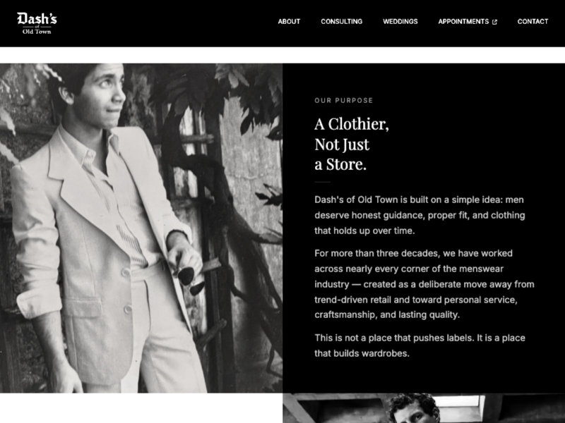
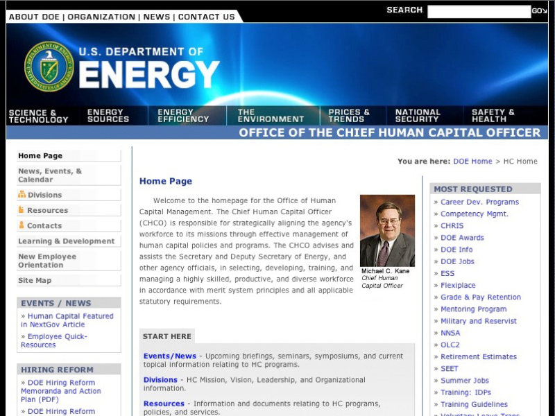
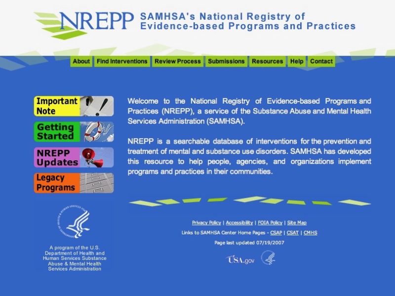

Looking for a contract or
long-term hire?
I specialize in building React applications for federal agencies and
enterprise systems. I've been shipping accessible, maintainable
frontends for 20+ years, from HRSA's multi-site Angular platform to
CPSC's internal modernization system. I specialize in 508 compliance
implementation, legacy system refactoring, and translating fuzzy
stakeholder requirements into highly usable solutions built with
clean, scalable code.
Technical Capabilities
Frontend Engineering: React, TypeScript, modern JavaScript
(ES6+); scalable component architecture
A word-level Huffman codec for Meshtastic LoRa mesh networks.
Compresses natural language messages by 1.5–2.5× so they travel
farther and arrive faster.
A little side project I dreamed up after wandering down a
Meshtastic rabbit hole. LoRa mesh networks are a very cool
emerging tech but their off-grid text messages are limited to
237-byte packets. It occurred to me you could stretch that out by
simple word compression. Meshperanto does so using a canonical
Huffman code over the 1,000 most frequent English words, drawn
from Peter Norvig's gold-standard trillion-word frequency
analysis, typically squeezing messages down by half.
I built it in what I know: TypeScript, with a React playground for
testing. It works great, but honestly, it'd be far more useful in
C or Python so it could run in ESP32 chips and the like. Whether I
get there myself or find a collaborator if it catches on, we'll
see. For now it's a clean, well-tested open source library that
does exactly what it says on the tin. Besides, once I came up with
the fantastic name, "MESHPERANTO!" there was no way I couldn't
build it.
Landing page and waitlist system for QuoDrox, a set of colorful
wooden tiles for tabletop RPGs currently in development. Built
from scratch in static HTML with BEM CSS architecture and full
accessibility compliance, but designed from the start with a
Shopify migration in mind.
The whimsical look was a lot of fun to design. Behind the curtain
it's built for a clean Shopify migration when the product
launches. The Liquid templating is already in place, the component
structure maps cleanly to Shopify's schema, and the SCSS is
organized to survive the transition without a rewrite.
AI-powered backstory generator combining old-school random tables
with modern LLMs (xAI API). Users quickly pick character traits,
the AI generates a coherent narrative from those constraints, then
they can regenerate specific sections they don't like without
losing the whole thread.
This was my first foray into agentic AI development and it turned
out quite well. Originally I built it using plain JavaScript with
massive random tables, but the results never meshed together into
anything coherent. When modern LLMs arrived, I tried using them
directly, but the results were equally nonsensical and crafting a
detailed prompt for each character took more effort than it was
worth.
I realized that combining both approaches could work: use
structured data (user-selected traits) to constrain the AI output.
The frontend manages the trait selection quickly, passes that to
the AI for narrative generation, then displays results where they
can be refined further. The hybrid system produces coherent
backstories without requiring users to become prompt engineers.
The technical challenge was managing the async API calls and
handling partial regeneration—users should be able to keep parts
they like while regenerating others. React's component model made
this much easier than the vanilla JS approach I started with.
Dash's of Old Town — 2026

Tech: HTML, CSS (compiled SCSS), Liquid
templates, static site
A bespoke menswear shop on King Street in Alexandria, Virginia.
Static site built with Liquid templating and compiled SCSS, chosen
deliberately over a CMS to keep it fast, maintainable, and easy
for a small shop to own long-term. (They all want a blog. They
never maintain the blog.)
I enjoyed building a CSS architecture for a unified system with
fluid typography and spacing that scales seamlessly across
viewports. It's nice the browser support is finally solid enough
to deploy such a system without breakpoint-stuffed media queries.
A full-stack accountability platform for life coaches. React
frontend with real-time dashboards, Express/SQLite backend,
Firebase auth.
This was my first full-stack build where I owned the entire
system, and I used Cursor extensively to accelerate development. I
handled the frontend architecture and React implementation myself
(that's my forte), but leveraged Cursor's AI assistance for
backend scaffolding, Express routing, and SQLite setup. The
result: I shipped a complete full-stack app in weeks instead of
months.
Doing all this was a real eye opener. The future of software
development isn't extensive hand coding and memorization of
abstruse syntax, it's having the experience and talent to
architect, direct, and debug systems as they're built
autonomously.
The program is a riff on the popular
12 Week Year concept, bringing clarity and intensity to a
task so it can be completed in record time. It helps users do that
by setting meaningful goals, tracking weekly execution, and
getting visual feedback via momentum indicators, check-in
dashboards, and self-assigned scoring.
The dashboard UI required managing complex state across multiple
views including momentum scores, check-in history, and weekly
progress tracking. I used React Context for global state and kept
component-level state minimal, which made the whole system far
easier to understand and debug.
Squirl! Mobile Game UI — 2025
Tech: React, SASS, HTML, Replit, Figma
Role: Frontend Developer
Link: NDA, details available upon request
Frontend development and UI design for an early-stage mobile game
startup.
A social mobile app that came to me as a working prototype built
with AI-assisted coding tools. The foundation was solid but the
architecture needed an experienced hand. First a lot of UX
consultation to define the goals and flows clearly followed by a
lot of code refactoring. Full details including client name are
under NDA, which is fairly standard for pre-launch products. Happy
to discuss the technical work in an interview setting.
This sort of work is becoming increasingly common. Vibe coding is
powerful and can get a founder to the demo stage but it almost
always takes a senior frontend developer to get them to a product.
Someone should launch a service just for that. Oh, wait...
Complex React app managing 50+ interconnected character creation
fields with cascading dependencies. Deliberately avoided a
database so everything runs from JSON/Markdown files. Packaged as
a WordPress plugin to play nicely with the existing site.
For all the nostalgia over the "good old days" of simpler
JavaScript, I can't imagine building this in anything other than
React. There's just TOO much state management. Character
attributes that affect available talents, talents that modify
stats, talents that are required for other talents, etc. In plain
JavaScript it would've been a Kafkaesque thicket of spaghetti
code.
I deliberately avoided a backend database to keep it portable and
modular. Everything is stored in plain JSON or Markdown files,
which are parsed directly into the page. Clunky? Well... maybe a
little. But more often than not, the KISS principle (Keep It
Simple, Stupid) wins over being devastatingly clever. With no
server requirements, no database migrations, and no deployment
complexity it can be just dropped in and it works.
The WordPress plugin integration was an interesting challenge.
React apps usually want to own the whole page, but here I needed
to play nicely with WordPress's ecosystem. The solution was
building a clean boundary layer that handles the React
mount/unmount lifecycle without conflicting with other plugins or
the theme.
Role: Senior UX / Front-End Developer @
Publicis Sapient
A production React application to modernize legacy internal
workflows for a federal agency. Implemented WCAG 2.1 AA
accessibility across 40+ custom components—baked in from the
start, not bolted on later. Had to extract actual requirements
from fuzzy processes and build something flexible enough to handle
shifting needs as the client clarified what they actually wanted.
The most vexing part of this project wasn't the React code; it was
extracting actual requirements from fuzzy internal processes. The
client knew exactly how to do their job but had a much harder time
spelling out the specific steps and identifying the edge cases
that had crept into their workflows. We had to build something
flexible enough to handle requirements that kept shifting as they
clarified their own processes.
From an architecture standpoint, this meant designing components
that could adapt without full rewrites and keeping the CSS
centralized instead of component-based. When a new requirement
surfaced (which happened frequently), we could often handle it by
reconfiguring existing components rather than building new ones
from scratch.
Accessibility is non-negotiable for federal work, so I built it in
from the start with quality markup and plugins with built-in
compliance rather than bolting it on later. That upfront
investment saved us from expensive remediation work and made the
Section 508 compliance audit relatively painless.
Role: Senior Frontend Developer @ Publicis
Sapient
Developed a component library and UX patterns deployed across 5+
federal healthcare websites. Built the Angular application from
beta through production, surviving complete rewrites when the
framework matured. Created reusable, accessibility-compliant
components used by multiple developer teams.
This project was a bear. We started with the beta version of
Angular, had to recode the entire thing when 1.0 was released, and
then reworked large swaths repeatedly until Angular finally
settled into a stable form. Launching a major project with a novel
technology was, perhaps, an ill-advised decision from the
higher-ups. But with perseverance and the grace of Stack Overflow
we pulled it off.
By the time I rolled off, the app was motoring along smoothly. The
project crises made for very rapid learning. Towards its end I was
working with the UX team to create style and component conventions
across the various sub-apps and that was a satisfying close to the
ride.
Role: Senior Frontend Developer @ Publicis
Sapient
A hybrid mobile banking app (PhoneGap/Cordova). I led CSS
architecture and cross-platform styling to ensure visual
consistency across iOS, Android, and legacy devices.
This was a hybrid mobile app built with PhoneGap for Pentagon
Federal Credit Union. I worked on the front end and was largely
responsible for the CSS and styling.
That task turned out to be far more complicated than expected,
thanks to the peculiarities of various mobile OSes and browsers.
Font rendering, layout, and z-index issues were my bane -
particularly on older browsers. I remember a teammate joking that
it would've been cheaper to just buy complaining users new phones
than spend days figuring out why something wasn't rendering
correctly on a three-year-old Android device.
The final product was solid but hammered home why mobile
development needed to move away from the hybrid approach. They
introduce too many limitations and whatever time you save on
initial development you'll likely squander on bug fixes. Native
apps offer far more control and consistency.
Department of Energy HR Website

Tech Stack: HTML, CSS, JavaScript, 508
Standards
Role: Lead UX & Senior Frontend Developer @
DST/SDSE
Redesign of the HR office for the Department of Energy. Solo
effort where I led the redesign as a straightforward static site
of HTML and CSS with 508 compliance. The heavy lift was lots of
consensus building and navigating bureaucratic requirements.
This was a complete redesign of the Department of Energy's HR
office. I knew I was in uncharted territory when I was directed to
rename the site to
"The Office of the Chief Human Capital Officer." Just
rolls off the tongue, right?
Bureaucratic tape aside, this job was mostly an exercise in
getting a large number of stakeholders to agree on what actually
needed to be built. The actual building of the site was rather
pedestrian: a static HTML and CSS affair with careful attention to
accessibility compliance. This remains my peak people-skills
project, and in the end, they served me well. Everyone agreed.
Everyone liked what was built. And no one saw a problem with
"The Office of the Chief Human Capital Officer.". Mission
accomplished.
Fun project story: While waiting to show my
designs to a director for sign-off, I sat outside his office
listening to him gushing about a great new company that was going
to revolutionize solar energy. The company?
Solyndra.
NREPP Online Training Course

Tech Stack: HTML, CSS, JavaScript, WebMerge
Role: Lead Frontend Developer @ MANILA
Consulting Group
A large interactive training course for the National Registry of
Evidence-based Programs and Practices that need to be delivered
both online and on CD-ROM.
Of all the work I've done over the years, this was probably my
favorite project. I got to handle all the design and most of the
coding—pure creative control, which is a rare thing. We had a team
of PhDs designing the course content and writers shaping the copy,
while I turned it into a working website.
The interesting technical challenge came when we learned the
course had to be usable on CD-ROM (those were the days, eh?). I
discovered magical WebMerge tool from 4th World Software. It let
us "mail-merge" our database-driven course into a static, portable
site that could run off a disc. I'm still a fan of WebMerge and
wager that many sites built today would work better with this
approach.
I think I loved doing this project because I got to be the captain
of all things Web. I chose the tech stack, implemented the
majority of the code, designed the interface, and handled the
graphics. This was right before websites became too complicated
for one person to field it all themselves. Interestingly, with the
new AI-assisted coding we're kind of circling back to that
paradigm again.